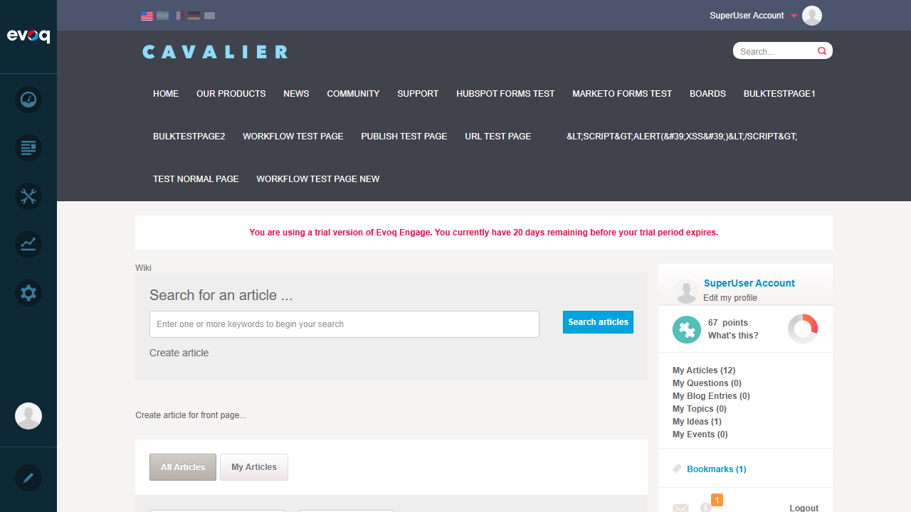

Metadata Tab: Name (text field), Description (textarea), with help text explaining these values appear on the right-hand side of the article
Save and Cancel buttons at the bottom
Screenshots:
Image tab showing file upload functionality with drag-drop area
Observations
Article Type Lock: Article Type is locked (disabled) after article creation. This is by design - the type can only be set during initial creation and cannot be changed afterward.
Metadata Fields by Type: Based on code review, metadata fields can be configured per article type through module settings (PostTypeSettings.ascx). Different article types can have different metadata fields enabled/disabled.
Field Types: The system supports multiple field types: date, text, URL, boolean, and multiline text - though the current article type only shows Name and Description fields.
Localization Support: The code includes localization support for metadata field labels (LocalizedKey property).
Content Item Integration: Metadata is stored as part of the DNN Content Item system, allowing for integration with other DNN features.
Additional Screenshots
Wiki Module Landing Page

Wiki module showing article list with search and filtering options